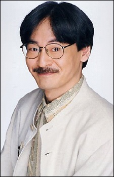
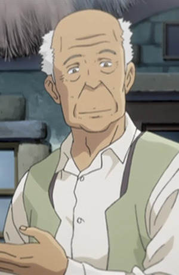

Tomohisa Asou is a Japanese voice actor. Asou is affiliated with Aoni Production.
- Gender: Male
- Birthday: May 13, 1949
- Hometown: Kanagawa, Japan
- Real Name: Takuya Matsumaru

|
Tomohisa Asou is a Japanese voice actor. Asou is affiliated with Aoni Production.
|
 |
|---|
|  | Walter | Allison and Lillia | Walter is an old man who help Allison and Wil with their mission. |
Go Back to Main Page |
Go Back to Homepage |
|
|
|
OR |
|